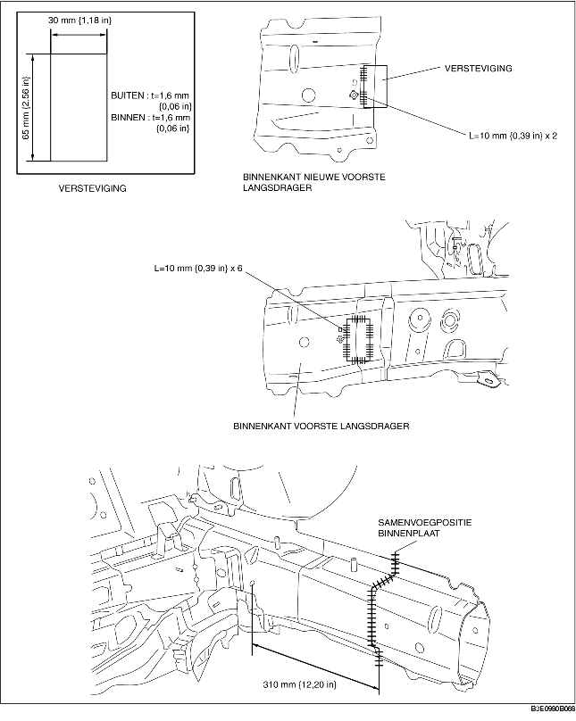
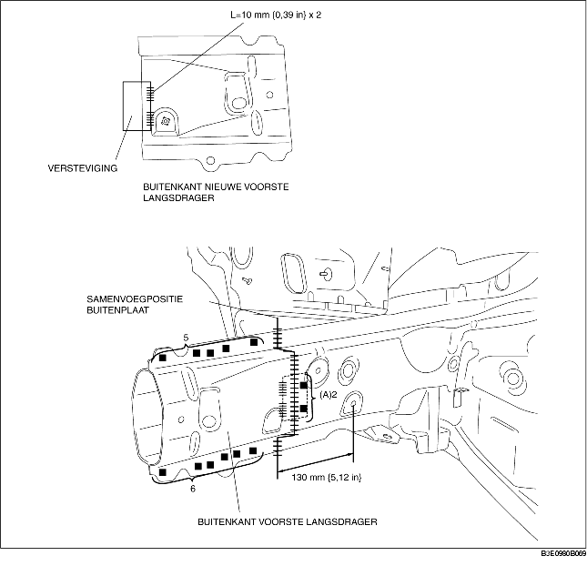

1. Maak een verstevigingspaneel met behulp van materiaal van de voorste langsdrager.
2. Snijd het oude deel op de in de afbeelding aangegeven plaatsen af, schuin de randen op de samenvoegpositie van het nieuwe en oude deel af.
3. Plaats de nieuwe en oude delen tijdelijk zodanig dat de de maten overeenkomen met de specificaties.
4. Plaats om de binnenplaat te installeren de nieuwe en oude tijdelijk, las de bestaande delen en de versteviging en stomplas vervolgens de nieuwe en oude delen.
5. Boor omdat de buitenplaat niet van binnenuit aan de oude delen kan worden gelast 2 gaten voor pluglassen aangegeven met (A) op de oude delen. Plaats de versteviging en de oude delen met behulp van pluglassen vanaf de buitenzijde van de langsdrager en stomplas vervolgens de nieuwe en oude delen.
6. Slijp het gebied waar de binnen- en buitenplaat gestomplast zijn met een slijpschijf glad.

